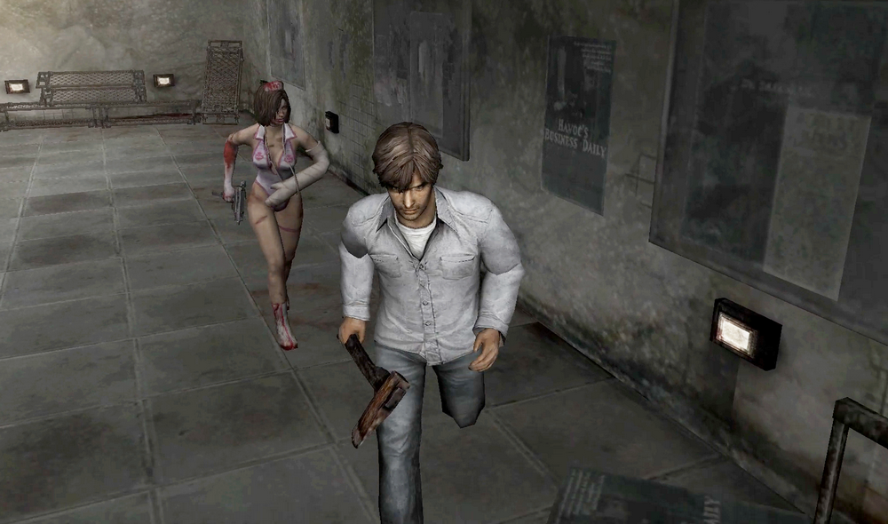
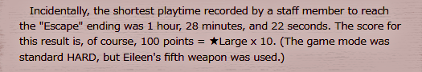
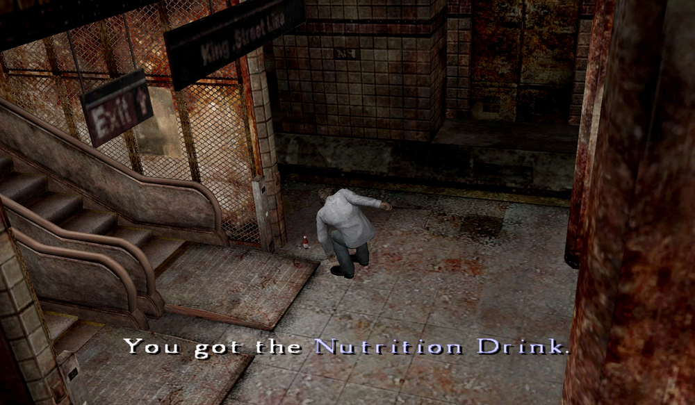
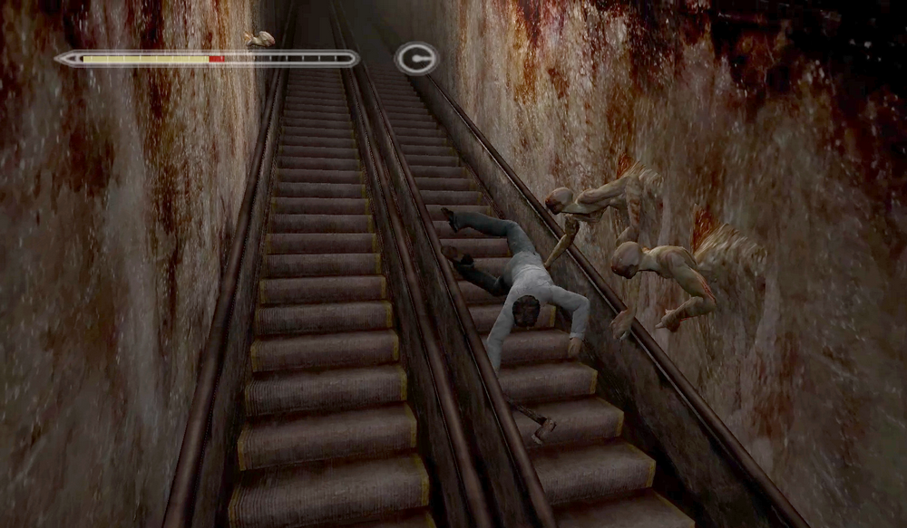
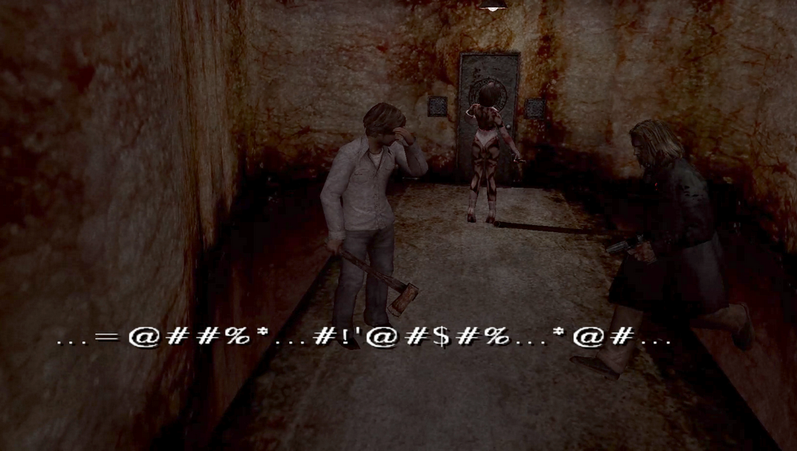
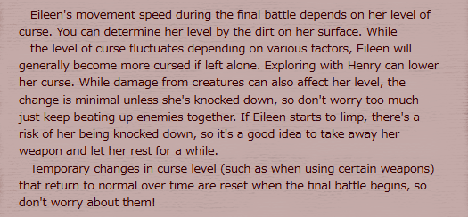
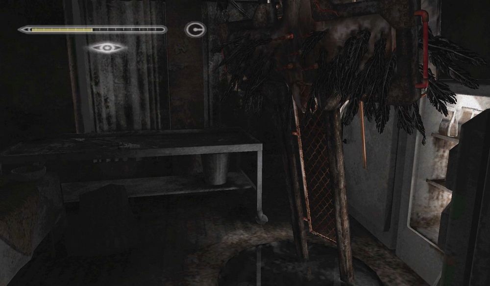
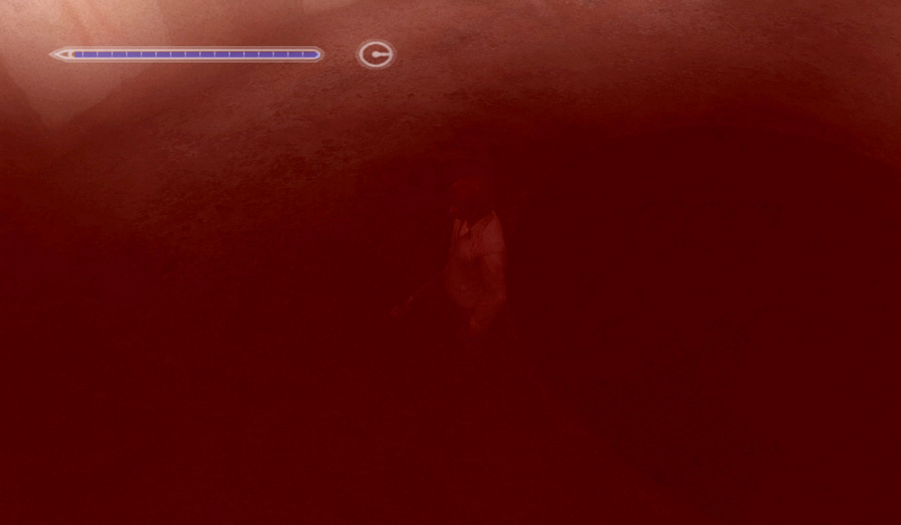
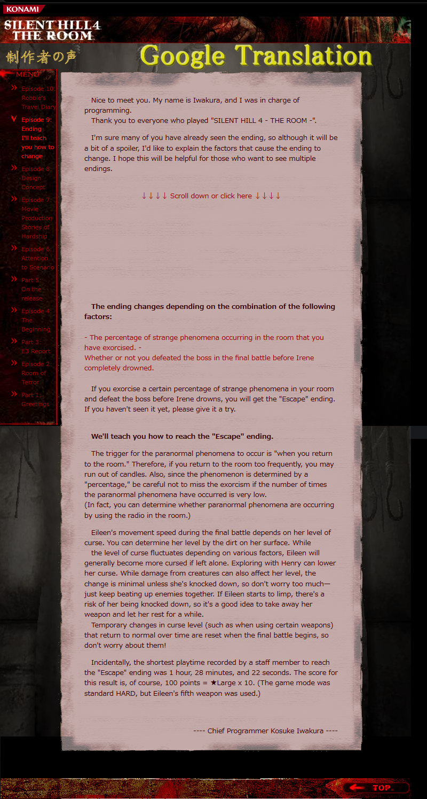

[SH4] Are Game Creators Good at Games?

These Triggers Are Also Very Well Designed
![[SH4] Are Game Creators Good at Games?](img/da34.png)
This is a mirror of the DeviantArt version linked above, provided as a backup and for easier access.

This time, it's an article by chief programmer Iwakura-san. I recommend reading them in translation.
🌐制作者の声「第9回:エンディング変化教えます」チーフプログラマー 岩倉宏介
From Konami SILENT HILL 4 THE ROOM, Developer's Voice" Vol. 9: "Teaching How the Changes in the Endings Are Triggered" Chief Programmer: Kosuke Iwakura
https://web.archive.org/web/20071207104657/http://www.konami.jp/gs/game/sh4/09roomq.html
The main content is explanations of things like the branching conditions for the endings, but since that information is already available in many places now, I'll omit it here. What I personally focused on was the "shortest playthrough" section at the end.
✅ Quote: Incidentally, the shortest playtime recorded by a staff member to reach the "Escape" ending was 1 hour, 28 minutes, and 22 seconds. The score for this result is, of course, 100 points = Large ★ x 10. (The game mode was standard HARD, but Eileen's fifth weapon was used.)

I've long thought about the question, "Are game creators good at playing games?"
Reading this makes me think that people who make games probably are good at games after all. Not everyone, of course. And I think the genre also matters.
I'm bad at games, especially action games.
When I unlocked One-Weapon Mode just to see Henry's face, I was following videos of people clearing Hard mode with restrictions—no healing, no exorcism, no item box except the Forest World (you can't get the "Escape" ending), cutter-knife only, and RTA etc. I would study how they avoided enemies and write down all the items and text I needed to pick up, and even then, aiming for under two hours, I still failed several times, lol. I could never do that again!

But if you flip that around, it also means that even someone at that level can unlock both the One-Weapon Mode and All-Weapon Mode if they put in the effort.
Since this is a game made by a major studio, I'm sure it was tested by players of all skill levels. Because of that, I think the difficulty is actually tuned pretty well. This is something you really notice if you're bad at games like me, so I wanted to talk about it anyway.

For example, in the early part of this game, your HP recovers when you return to Room 302, so you don't need recovery items yet. But in the initial subway section you're constantly being chased by Ghosts and Sniffer Dogs, get exhausted, and usually get beaten by Wall Men at the escalator and almost die. That's why there's the nutrition drink placed right before going up. This is a safety net for unskilled players.

They usually get blown away like this and end up with a game over... lol.
I previously wrote that when Gum Heads steal holy candles and some weapons, it attacks you with it, but what Gum Heads steal are only light weapons like the steal pipe, the golf clubs, or the stun gun. It doesn't steal guns, and it also doesn't take things like the Rusty Axe or the Pickaxe of Despair, which would be fatal for the player to lose.

The ghost sections and escort missions were criticized as being annoying, but ghosts only appear in fixed locations, and there are places where it's fine to leave Eileen behind.

Even if you hit Eileen repeatedly by mistake, it's actually difficult to reach a very high possession level. As long as you do not give her the weapon and do not leave her in areas with enemies, you might still recover in the final part...!?

As Iwakura-san also wrote, Eileen's possession progresses based on the number of times you leave her behind and go through the door (not the amount of time you leave her alone). Because of this, if you go through the door together, you can reverse her possession, and many people have experimented with this.. 100 times, no, that's not enough... 300 times, 1000 times, even more...
Many other methods have been tested, such as using Holy Candles to cure her condition, and the verification efforts of those who experimented with it in the past are incredible.
In the end, theories vary and I feel like we still don't know for sure, but I think these triggers are also very well designed.
By the way, it might be surprisingly little known that even if you don't heal before the final boss fight, entering the red room fully restores you. I never noticed either because I was busy chugging drinks in the room beforehand to prepare for the boss fight, haha. I only learned it from someone who was doing a no-healing-items challenge run.


So even if you accidentally forget to the healing items before going to the ritual chamber, you should still theoretically be able to win the boss fight.
Even when you look at the smallest details, the balance in this game is masterfully tuned, right on the edge!
